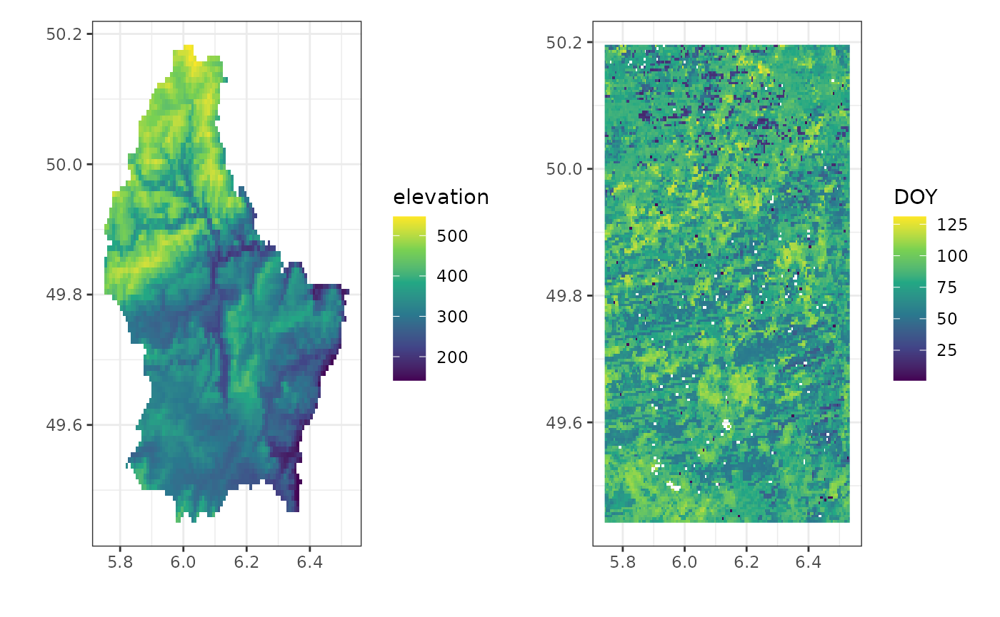

AppEEARS functionality
Koen Hufkens
2023-05-20
Source:vignettes/appeears_vignette.Rmd
appeears_vignette.RmdSetup
Before starting save the provided NASA Earth Data password to your local keychain. The package does not allow you to use your password inline in scripts to limit security issues when sharing scripts on github or otherwise.
library(appeears)
# set a key to the keychain
rs_set_key(
user = "earth_data_user",
password = "XXXXXXXXXXXXXXXXXXXXXX"
)
# you can retrieve the password using
rs_get_key(user = "earth_data_user")
# the output should be the key you provided
# "XXXXXXXXXXXXXXXXXXXXXX"Downloads are managed using a Bearer/session token. This token is
valid for 48 hours, after which it will expire and you will need to
request a new one. Although downloads are managed using the user
(keychain) details only, you can request the current token using
rs_login(), while rs_logout() will explicitly
invalidate the current session token.
Use
Listing available data
You can list all available products on the AppEEARS API using the
rs_products() function. Similarly, you can list all
available layers for a given product using rs_layers().
Note that when queryign the layers for a product you will need to use
the field ProductAndVersion field, as some products are
listed under various versions.
# list all product information
products <- rs_products()
# print the start of all products with their versions
head(products$ProductAndVersion)
#> [1] "GPW_DataQualityInd.411" "GPW_UN_Adj_PopCount.411"
#> [3] "GPW_UN_Adj_PopDensity.411" "GPW_Basic_Demog_Char.411"
#> [5] "MCD12Q1.006" "MCD12Q2.006"
# list all layers for a particular
# product
layers <- rs_layers(
product = "MCD12Q2.006"
)
head(layers)
#> AddOffset Available DataType
#> 1 TRUE int16
#> 2 TRUE int16
#> 3 TRUE int16
#> 4 TRUE int16
#> 5 TRUE int16
#> 6 TRUE int16
#> Description
#> 1 Date when EVI2 last crossed 15% of the segment EVI2 amplitude
#> 2 Segment maximum - minimum EVI2
#> 3 Sum of daily interpolated EVI2 from Greenup to Dormancy
#> 4 Segment minimum EVI2 value
#> 5 Date when EVI2 first crossed 15% of the segment EVI2 amplitude
#> 6 Date when EVI2 first crossed 90% of the segment EVI2 amplitude
#> Dimensions FillValue FillValueRaw Group IsQA Layer
#> 1 time, YDim, XDim, Num_Modes 32767 32767 FALSE Dormancy
#> 2 time, YDim, XDim, Num_Modes 32767 32767 FALSE EVI_Amplitude
#> 3 time, YDim, XDim, Num_Modes 32767 32767 FALSE EVI_Area
#> 4 time, YDim, XDim, Num_Modes 32767 32767 FALSE EVI_Minimum
#> 5 time, YDim, XDim, Num_Modes 32767 32767 FALSE Greenup
#> 6 time, YDim, XDim, Num_Modes 32767 32767 FALSE Maturity
#> OrigDataType OrigValidMax OrigValidMin
#> 1 int16 32766 11138
#> 2 int16 10000 0
#> 3 int16 3700 0
#> 4 int16 10000 0
#> 5 int16 32766 11138
#> 6 int16 32766 11138
#> QualityLayers
#> 1 ['QA_Detailed_0','QA_Detailed_1','QA_Overall_0','QA_Overall_1']
#> 2 ['QA_Detailed_0','QA_Detailed_1','QA_Overall_0','QA_Overall_1']
#> 3 ['QA_Detailed_0','QA_Detailed_1','QA_Overall_0','QA_Overall_1']
#> 4 ['QA_Detailed_0','QA_Detailed_1','QA_Overall_0','QA_Overall_1']
#> 5 ['QA_Detailed_0','QA_Detailed_1','QA_Overall_0','QA_Overall_1']
#> 6 ['QA_Detailed_0','QA_Detailed_1','QA_Overall_0','QA_Overall_1']
#> QualityProductAndVersion ScaleFactor Units ValidMax ValidMin XSize YSize
#> 1 MCD12Q2.006 1 Day 32766 11138 2400 2400
#> 2 MCD12Q2.006 1e-04 EVI2 10000 0 2400 2400
#> 3 MCD12Q2.006 0.1 EVI2 3700 0 2400 2400
#> 4 MCD12Q2.006 1e-04 EVI2 10000 0 2400 2400
#> 5 MCD12Q2.006 1 Day 32766 11138 2400 2400
#> 6 MCD12Q2.006 1 Day 32766 11138 2400 2400
#> Band
#> 1 Dormancy
#> 2 EVI_Amplitude
#> 3 EVI_Area
#> 4 EVI_Minimum
#> 5 Greenup
#> 6 MaturityPoint based data requests
All point based queries are made by first creating a tidy data frame with the desired products and layers to query.
In this data frame task specifies the overall name of
the task to run (this prefix will be used to name the final downloaded
files). The subtask denotes the various locations and or
products you want to query. As such, you can query multiple locations in
the same larger task, avoiding multiple queries to the API.
The latitude and longitude fields specify
geographic coordinates of query locations, while start and
end columns define the range of the data queried. Note that
the date range will cover the maximum date range across all
subtasks. If date ranges vary widely it is advised to
create separate tasks.
Finally the product and layer columns
denote the remote sensing product and particular layer to download. A
full list of products can be queried using rs_products(),
while the layers of a particular product can be listed using
rs_layers(). Note that the product needs to be specified
using the full product name, including the version of the product (as
stored in the ProductAndVersion field).
For point and area based queries all data are saved in a subdirectory
of the main path as defined by the task name.
# Load the library
library(appeears)
# list all products
rs_products()
# list layers of the MOD11A2.061 product
rs_layers("MOD11A2.061")
df <- data.frame(
task = "time_series",
subtask = "US-Ha1",
latitude = 42.5378,
longitude = -72.1715,
start = "2010-01-01",
end = "2010-12-31",
product = "MCD43A4.061",
layer = c("Nadir_Reflectance_Band3","Nadir_Reflectance_Band4")
)
# build the area based request/task
# rename the task name so data will
# be saved in the "point" folder
# as defined by the task name
df$task <- "point"
task <- rs_build_task(df = df)
# request the task to be executed
rs_request(
request = task,
user = "earth_data_user",
transfer = TRUE,
path = "~/some_path",
verbose = TRUE
)We can now read in the downloaded data from the download path. Note that a subfolder will be created based upon the task name, and “_” will be converted internally to “-” in the downloaded file names.
# read in data
time_series <- read.table(
"~/some_path/time_series/time-series-MCD43A4-061-results.csv",
header = TRUE,
sep = ","
)The downloaded data contains both requested bands as columns and we can do band math easily. Below the Normalized Difference Vegetation Index (NDVI) is calculated using bands 3 (red) and band 4 (NIR). We use the MODLAND quality control bands to screen out spurious values (those equal to 255). Finally, a quick plot is generated for the NDVI values for year 2010.
# convert band 3 and 4 to NDVI
time_series <- time_series |>
mutate(
Date = as.Date(Date),
NDVI = (MCD43A4_061_Nadir_Reflectance_Band4 - MCD43A4_061_Nadir_Reflectance_Band3)/
(MCD43A4_061_Nadir_Reflectance_Band4 + MCD43A4_061_Nadir_Reflectance_Band3)
)
# screen for quality control
time_series <- time_series |>
mutate(
NDVI = ifelse(MCD43A4_061_BRDF_Albedo_Band_Mandatory_Quality_Band4 == 255 |
MCD43A4_061_BRDF_Albedo_Band_Mandatory_Quality_Band3 == 255,
NA, NDVI)
)
# plot the time series
ggplot(time_series) +
geom_point(
aes(
Date,
NDVI
)
) +
theme_bw()Area based data requests
You can select a region-of-interest (ROI) instead of point based
data, using both sf polygons or the extent (bounding box)
of an existing terra SpatRaster object. Both
methods follow the same workflow.
{sf} polygon ROI
When using an sf object, provide it to the
roi argument of the rs_build_task() function.
The sf object must be of class sf not
sfc when required convert sfc data using
st_as_sf().
Note however that at the time only as simple polygon is supported.
Multiple polygons in the same sf object might result in
failure to query the data.
Furthermore, no other means will be provided to specify a
region-of-interest. As such, you will always have to query a
region-of-interest using an sf object. This ensures
consistency across queries and allows for rapid visualization of a
region of interest (in contrast to a simple list of e.g. top-left,
bottom-right coordinates).
# load the required libraries
library(appeears)
library(sf)
library(dplyr)
library(ggplot2)
df <- data.frame(
task = "time_series",
subtask = "subtask",
latitude = 42.5378,
longitude = -72.1715,
start = "2010-01-01",
end = "2010-12-31",
product = "MCD12Q2.006",
layer = c("Greenup")
)
# load the north carolina demo data
# included in the {sf} package
# and only retain Camden county
roi <- st_read(system.file("gpkg/nc.gpkg", package="sf"), quiet = TRUE) |>
filter(
NAME == "Camden"
)
# build the area based request/task
# rename the task name so data will
# be saved in the "polygon" folder
# as defined by the task name
df$task <- "polygon"
task <- rs_build_task(
df = df,
roi = roi,
format = "geotiff"
)
# request the task to be executed
rs_request(
request = task,
user = "earth_data_user",
transfer = TRUE,
path = "~/some_path",
verbose = TRUE
)Once downloaded the geotiff can be read in using the
terra package from the subfolder defined by the
task name.
library(terra)
r_polygon <- terra::rast(
file.path("~/some_path","polygon/MCD12Q2.006_Greenup_0_doy2010001_aid0001.tif")
)A quick plot of both the raster and vector polygon show the cut-out as provided by the AppEEARS API.
# convert to data frame for plotting
# with ggplot2, otherwise use the
# tidyterra package and geom_spatrast()
df_polygon <- r_polygon |>
as.data.frame(xy=TRUE)
# convert incremental values (days since Jan 1, 1970
# to DOY)
df_polygon <- df_polygon |>
mutate(
DOY = as.numeric(
format(
as.Date("1970-01-01") + MCD12Q2.006_Greenup_0_doy2010001_aid0001, "%j"
)
)
) |>
filter(
DOY < 180
)
head(df_polygon)
#> x y MCD12Q2.006_Greenup_0_doy2010001_aid0001 DOY
#> 1 -76.56458 36.55625 14695 86
#> 2 -76.56042 36.55625 14692 83
#> 3 -76.55625 36.55625 14692 83
#> 4 -76.55208 36.55625 14692 83
#> 5 -76.54792 36.55625 14688 79
#> 6 -76.54375 36.55625 14690 81
ggplot() +
geom_raster(
data = df_polygon,
aes(
x,
y,
fill = DOY
)
) +
labs(
x = "",
y = ""
) +
scale_fill_viridis_c() +
geom_sf(
data = roi,
fill = NA,
colour = "red",
lwd = 2
) +
theme_bw(){terra} SpatRaster ROI
The terra based region-of-interest workflow is similar
to that of sf polygon based queries. One only has to
provide a SpatRaster as an roi argument in
rs_build_task() to query a region of the same extent as the
SpatRaster. The use case for this functionality is obvious,
creating a quick way to sample new data for an existing data set (using
the same coverage).
Note that unlike the sf method a bounding box is used
and masked data is ignored (the full extent is downloaded and masking
will have to be repeated afterwards).
# load the required libraries
library(terra)
library(ggplot2)
library(patchwork)
# create a SpatRaster ROI from the terra demo file
f <- system.file("ex/elev.tif", package="terra")
roi <- terra::rast(f)
# build the area based request/task
# rename the task name so data will
# be saved in the "raster" folder
# as defined by the task name
df$task <- "raster"
task <- rs_build_task(
df = df,
roi = roi,
format = "geotiff"
)
# request the task to be executed
rs_request(
request = task,
user = "earth_data_user",
transfer = TRUE,
path = "~/some_path",
verbose = TRUE
)Once downloaded the geotiff can be read in using the
terra package from the subfolder defined by the
task name.
r_raster <- terra::rast(
file.path("~/some_path","raster/MCD12Q2.006_Greenup_0_doy2010001_aid0001.tif")
)A quick plot of both the raster and vector polygon show the cut-out as provided by the AppEEARS API.
# convert to data frame for plotting
# with ggplot2, otherwise use the
# tidyterra package and geom_spatrast()
df_raster <- r_raster |>
as.data.frame(xy=TRUE)
# convert incremental values (days since Jan 1, 1970
# to DOY)
df_raster <- df_raster |>
mutate(
DOY = as.numeric(
format(
as.Date("1970-01-01") + MCD12Q2.006_Greenup_0_doy2010001_aid0001, "%j"
)
)
) |>
filter(
DOY < 180
)
df_source <- roi |>
as.data.frame(xy=TRUE)
p <- ggplot() +
geom_raster(
data = df_source,
aes(
x,
y,
fill = elevation
)
) +
labs(
x = "",
y = ""
) +
scale_fill_viridis_c() +
theme_bw()
p2 <- ggplot() +
geom_raster(
data = df_raster,
aes(
x,
y,
fill = DOY
)
) +
labs(
x = "",
y = ""
) +
scale_fill_viridis_c() +
theme_bw()
# patchwork side by side plot
p | p2